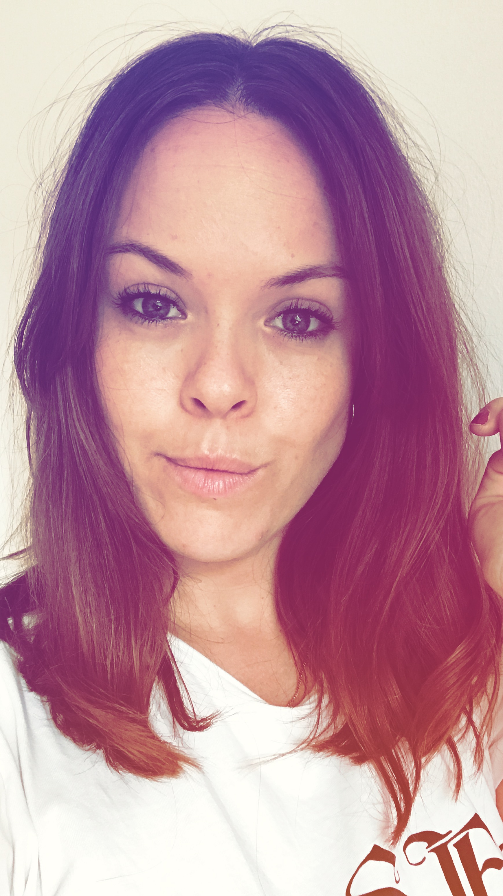

OM MIG...
Hej, jeg hedder Ann-Cathrine Rino. Jeg er pt. på første semester af min uddannelse som Multimediedesigner, og tænker at læse videre indenfor faget når jeg er færdig.
Jeg er hooked på digitale løsninger, og ville elsker at lande I branchen som designer af digitale løsninger. Jeg brænder for sociale medier, og udviklingen af digitalt design. Jeg er en energisk person, men en stor nysgerrighed og mod på at springe ud I noget nyt. Jeg sætter pris på struktur og tager gerne ansvar hvor der er behov for det.
UDDANNELSE
Muiltimediedesign KEA 2018-Nu
Fuld HF på KVUC selfstudy 2016-2017
London makeup academy 2008
Frisør skolen , Nørrebro 2004-2008
ERFARING
Jeg har tidligere været ejer af en webshop der solgte økologiske skønhedsprodukter. Her fik jeg erfaret en masse viden om web butik styrrelse, Shopify, kontakter med influencers og virkningen af sociale medier, samt en endnu større lyst til at arbejde med det digitale. Derudover arbejder jeg PT på en tegnestue hvor jeg er ansvarlig for deres webside ( Wordpress) og er ansat af et dansk design brand til at lave SoME på andet år nu. Jeg har været bosat I London I 6 år, og har en masse diversitet og openmindedhed med I bagagen derfra.